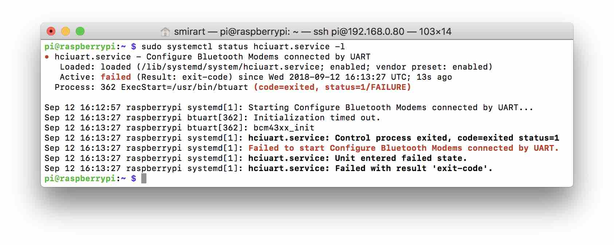

UART interface
UART is an asynchronous serial interface for data transfer that is used in many devices. For example, GPS antennas, Wi-Fi routers, or Pixhawk.
The interface usually contains two lines: TX for data transmission, and RX for data reception. It usually uses the 5-volt logics.
To connect two devices, you have to feed the TX line of the first device to the RX line of the other one. A similar manipulation is required on the other end for ensuring two-way data transmission.
It is also necessary to synchronize the voltages – connect the ground on two devices.
Read more about the interface and the Protocol in this article.
Linux TTY
In Linux, there is the concept of Posix Terminal Interface (read more here). It is an abstraction over the serial or virtual interface that allows several agents to work with the device simultaneously.
An example of such abstraction in Raspbian may be /dev/tty1 – the device for text output to the screen connected via HDMI.
UART on Raspberry Pi 3
Raspberry Pi 3 has two hardware UART interfaces:
- Mini UART (
/dev/ttyAMA0) – uses the timing of the RPi graphics core, and therefore limits its frequency. - PL011 (
/dev/ttyS0) – the full-fledged UART interface on a separate chip of the microcontroller.
Read more about UART on Raspberry Pi in the official article.
Using microcontroller valves, these interfaces may be switched between two physical outputs:
- UART connector on GPIO;
- RPi Bluetooth module.
By default, Raspberry Pi 3 PL011 is connected to the Bluetooth module. And Mini UART is disabled with the value of directive enable_uart, which is 0 by default.
One should understand that directive
enable_uartchanges its default value, depending on which UART is connected to the RPi Bluetooth module with directivedtoverlay=pi3-miniuart-bt.
For the sake of convenience of working with these outputs, aliases exist in Raspbian:
/dev/serial0– always points to the TTY device that is connected to the GPIO ports./dev/serial1– always points to the TTY device that is connected to the Bluetooh module.
Configuration of UART on Raspberry Pi 3
To configure UART, there are directives located in /boot/config.txt.
To enable the UART interface on GPIO:
enable_uart=1
To disconnect the UART interface from the Bluetooth module:
dtoverlay=pi3-disable-bt
To connect Mini UART to the Bluetooth module:
dtoverlay=pi3-miniuart-bt
If the Bluetooth module is disabled, one should disable the hciuart service:
sudo systemctl disable hciuart.service
Default image configuration
In image CLEVER, we initially disabled Mini UART and the Bluetooth module.
Bugs
If you use the Mini UART connection to Bluetooth, hciuart crashes with the following error:

In case of Bluetooth disconnection
/dev/serial0 -\> ttyAMA0
/dev/serial1 -\> ttyS0